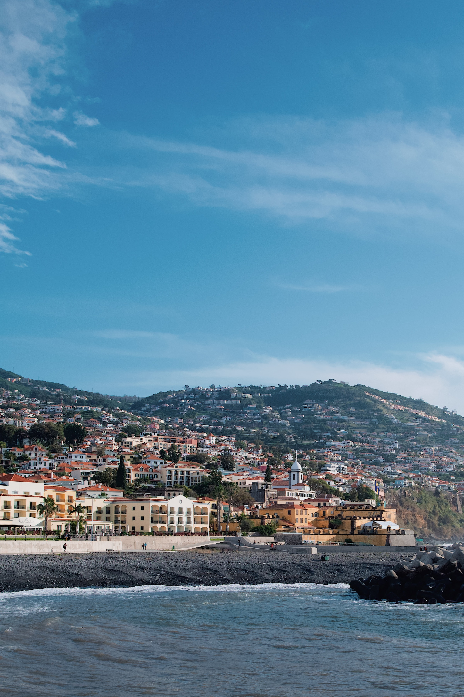
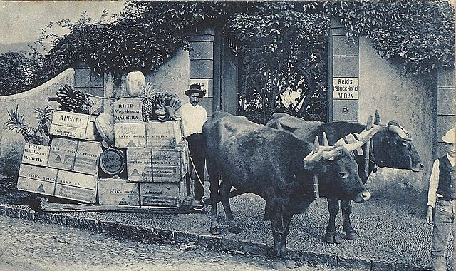

Madeira Wanderlust
Welcome to Madeira
Discover the captivating attraction of Madeira, a charming island off the southwest coast of Portugal. Madeira is clearly Portugal's secret gem with its picture-perfect volcanic beaches, stunning mountainous landscape, and inviting warm temperature. Discover the island's must-see sights in our magazine as we list them and explain why we are sure you will be fascinated by them as well.

Funchal
Ponta do Sol
Eira do Serrado
Porto Moniz
Funchal

Funchal is the enchanting capital of the island of Madeira. With its obvious charm and attraction the dynamic center of the Archipelago is nestled along the Atlantic and resembles a natural amphitheatre.
Funchal has a rich history that combines tradition, culture, and European internationalization while remaining in tune with the beautiful surroundings.
The city derives its name from the plentiful sweet-smelling wild herb fennel and has long been a significant commercial centre in the Atlantic, with important local products like sugar and wine supporting its growing economy.This fascinating city, made up of ten churches, has a multitude of historical landmarks, museums, recreational places, beautiful landscaping, and stunning views.
Ponta do Sol

The lovely village of Ponta do Sol, which is known for having the most sunshine hours per year, is the perfect place to soak up the voluminous sunshine of Madeira's southwest coast. Beach lovers and outdoor enthusiasts both adore this wonderful location. Along with attracting tourists, Ponta do Sol is a significant agricultural hub that produces well-known products like bananas and sugar cane as well as supporting thriving horticulture and floriculture sectors. Discover Ponta do Sol with its breathtaking mountain views, charming villages, and inviting beaches.

The lovely village of Ponta do Sol, which is known for having the most sunshine hours per year, is the perfect place to soak up the voluminous sunshine of Madeira's southwest coast. Beach lovers and outdoor enthusiasts both adore this wonderful location. Along with attracting tourists, Ponta do Sol is a significant agricultural hub that produces well-known products like bananas and sugar cane as well as supporting thriving horticulture and floriculture sectors. Discover Ponta do Sol with its breathtaking mountain views, charming villages, and inviting beaches.

enjoy the view.
Eira
do
Serrado

Eira do Serrado is a small village located in the heart of the island of Madeira, Portugal. It sits at an elevation of about 1,000 meters (3,280 feet) above sea level, nestled between two towering peaks - Pico do Arieiro and Pico das Torres. The village is known for its stunning panoramic views of Madeira's mountainous terrain and for its close proximity to the breathtaking Curral das Freiras (Valley of the Nuns).

The village is known for its natural beauty and is a popular destination for nature lovers and hikers The surrounding area is covered with lush greenery, and there are several trails and paths that lead to different viewpoints, including Pico do Arieiro, Madeira's third-highest peak.

One of the main attractions in Eira do Serrado is the Miradouro Eira do Serrado, a lookout point that offers sweeping views of the valley below. Visitors can also hike to the nearby Pico do Arieiro, which is the third-highest peak on the island and provides even more stunning views of the surrounding landscape.
Porto Moniz

Located in the north of the Island of Madeira, Porto Moniz is a municipality that has some of the most beautiful sceneries in the Region. Between the imposing mountains and the calm surface of the ocean, Porto Moniz also dazzles with the charm of its picturesque parishes, which overflow with rich customs.

This whole region is deeply marked by the botanical diversity of the Laurissilva Forest, which from its height confronts the imposing northern sea, through its ridges, cliffs and coves.

You can't talk about Porto Moniz without mentioning the natural pools in its volcanic rocks where their clear waters are renewed cyclically. The eternal ex-libris of this municipality.
Photography
Madeira Island is a photographer's paradise. For those looking to capture the island's essence, we've listed five must-visit viewpoints, each of these viewpoints offers a unique perspective of Madeira's beauty, ensuring you'll return home with a collection of stunning photographs to cherish forever.
Click to explore some amazing images from Madeira.
image 1 description
ACTIVITIES

Coasteering

Swimming

Hiking
Coasteering article content...
Swimming article content...
Hiking article content...